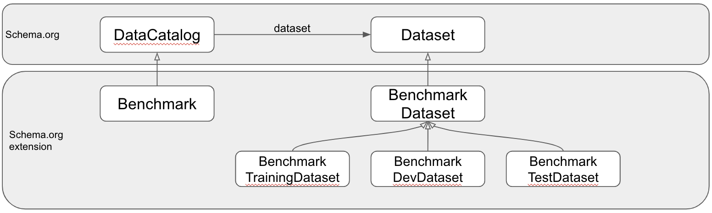
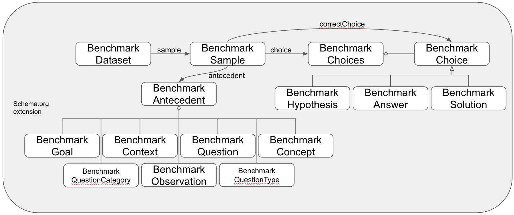

MCS Ontology
Release 2020-06-22
- This version:
- http://purl.org/twc/mcs/0.1
- Latest version:
- http://purl.org/twc/mcs/
- Revision:
- 0.1
- Authors:
- Henrique O. Santos
- Download serialization:


- License:

- Visualization:

- Cite as:
- Henrique O. Santos. MCS Ontology. Revision: 0.1. Retrieved from: http://purl.org/twc/mcs/0.1
Abstract
The main goal in commonsense reasoning is to improve score against specific commonsense question-answering benchmarks. In this context, there exists leaderboards that act as a hub for hosting benchmarks and allowing systems submissions that try to improve the score. These benchmarks vary in structure. Some provide questions and answer choices, while others may require systems to reason over observations and provide explanations by the choice of a most appropriate hypothesis. This is an ontology that provide a common vocabulary for annotating datasets that compose commonsense reasoning benchmarks, as well as submissions, and systems. Its goal is to allow diverse benchmarks to be compared, integrated and also support the analysis of systems and machine-learning models.Introduction back to ToC
Machine commonsense Benchmarks vary in structure and in purpose. Some provide plain question and answer choices while others may provide additional context alongside questions or even just provide narratives in the form of observations and hypothesis choices to explain them. These benchmarks are commonly hosted in a leaderboard website, where they don't share a common modeling schema. This ontology aims to provide a common benchmark modeling that can be leveraged in benchmark systems to allow comparison and integration. We have analyzed the following commonsense benchmarks:- CycIC
- CommonsenseQA
- PhysicalIQA
- SocialIQA
- HellaSwag
- AlphaNLI
Namespace declarations
| mcs | <http://purl.org/twc/mcs/> |
| schema | <http://schema.org> |
| owl | <http://www.w3.org/2002/07/owl> |
| rdf | <http://www.w3.org/1999/02/22-rdf-syntax-ns> |
| xsd | <http://www.w3.org/2001/XMLSchema> |
| rdfs | <http://www.w3.org/2000/01/rdf-schema> |
| vann | <http://purl.org/vocab/vann> |
| default namespace | <http://purl.org/twc/mcs> |
MCS Ontology: Overview back to ToC
This ontology has the following classes and properties.Classes
- Benchmark
- Benchmark Answer
- Benchmark Antecedent
- Benchmark Choice
- Benchmark Choices
- Benchmark Concept
- Benchmark Context
- Benchmark Dataset
- Benchmark DevDataset
- Benchmark Goal
- Benchmark Hypothesis
- Benchmark Observation
- Benchmark Question
- Benchmark Question Category
- Benchmark Question Type
- Benchmark Sample
- Benchmark Solution
- Benchmark TestDataset
- Benchmark TrainingDataset
- DevScore
- Submission
- Submission Sample
- TestScore
Object Properties
MCS Ontology: Description back to ToC
 Cross reference for MCS Ontology classes, properties and dataproperties back to ToC
This section provides details for each class and property defined by MCS Ontology.Classes
- Benchmark
- Benchmark Answer
- Benchmark Antecedent
- Benchmark Choice
- Benchmark Choices
- Benchmark Concept
- Benchmark Context
- Benchmark Dataset
- Benchmark DevDataset
- Benchmark Goal
- Benchmark Hypothesis
- Benchmark Observation
- Benchmark Question
- Benchmark Question Category
- Benchmark Question Type
- Benchmark Sample
- Benchmark Solution
- Benchmark TestDataset
- Benchmark TrainingDataset
- DevScore
- Submission
- Submission Sample
- TestScore
Benchmarkc back to ToC or Class ToC
IRI: http://purl.org/twc/mcs/Benchmark
- has super-classes
- data catalog c
Benchmark Answerc back to ToC or Class ToC
IRI: http://purl.org/twc/mcs/BenchmarkAnswer
- has super-classes
- Benchmark Choice c
Benchmark Antecedentc back to ToC or Class ToC
IRI: http://purl.org/twc/mcs/BenchmarkAntecedent
- has super-classes
- item list c
- is in range of
- antecedent op
Benchmark Choicec back to ToC or Class ToC
IRI: http://purl.org/twc/mcs/BenchmarkChoice
- has super-classes
- list item c
- has sub-classes
- Benchmark Answer c, Benchmark Hypothesis c, Benchmark Solution c
Benchmark Choicesc back to ToC or Class ToC
IRI: http://purl.org/twc/mcs/BenchmarkChoices
- has super-classes
- item list c
- is in range of
- choices op
Benchmark Conceptc back to ToC or Class ToC
IRI: http://purl.org/twc/mcs/BenchmarkConcept
- has super-classes
- list item c
Benchmark Contextc back to ToC or Class ToC
IRI: http://purl.org/twc/mcs/BenchmarkContext
- has super-classes
- list item c
Benchmark Datasetc back to ToC or Class ToC
IRI: http://purl.org/twc/mcs/BenchmarkDataset
- has super-classes
- dataset c
- has sub-classes
- Benchmark DevDataset c, Benchmark TestDataset c, Benchmark TrainingDataset c
- is in domain of
- sample op
Benchmark DevDatasetc back to ToC or Class ToC
IRI: http://purl.org/twc/mcs/BenchmarkDevDataset
- has super-classes
- Benchmark Dataset c
Benchmark Goalc back to ToC or Class ToC
IRI: http://purl.org/twc/mcs/BenchmarkGoal
- has super-classes
- list item c
Benchmark Hypothesisc back to ToC or Class ToC
IRI: http://purl.org/twc/mcs/BenchmarkHypothesis
- has super-classes
- Benchmark Choice c
Benchmark Observationc back to ToC or Class ToC
IRI: http://purl.org/twc/mcs/BenchmarkObservation
- has super-classes
- list item c
Benchmark Questionc back to ToC or Class ToC
IRI: http://purl.org/twc/mcs/BenchmarkQuestion
- has super-classes
- list item c
Benchmark Question Categoryc back to ToC or Class ToC
IRI: http://purl.org/twc/mcs/BenchmarkQuestionCategory
- has super-classes
- list item c
Benchmark Question Typec back to ToC or Class ToC
IRI: http://purl.org/twc/mcs/BenchmarkQuestionType
- has super-classes
- list item c
Benchmark Samplec back to ToC or Class ToC
IRI: http://purl.org/twc/mcs/BenchmarkSample
- has super-classes
- creative work c
- is in domain of
- antecedent op, choices op
- is in range of
- sample op
Benchmark Solutionc back to ToC or Class ToC
IRI: http://purl.org/twc/mcs/BenchmarkSolution
- has super-classes
- Benchmark Choice c
Benchmark TestDatasetc back to ToC or Class ToC
IRI: http://purl.org/twc/mcs/BenchmarkTestDataset
- has super-classes
- Benchmark Dataset c
Benchmark TrainingDatasetc back to ToC or Class ToC
IRI: http://purl.org/twc/mcs/BenchmarkTrainingDataset
- has super-classes
- Benchmark Dataset c
DevScorec back to ToC or Class ToC
IRI: http://purl.org/twc/mcs/DevScore
- has super-classes
- rating c
Submissionc back to ToC or Class ToC
IRI: http://purl.org/twc/mcs/Submission
- has super-classes
- dataset c
Object Properties
antecedentop back to ToC or Object Property ToC
IRI: http://purl.org/twc/mcs/antecedent
- has super-properties
- has part op
- has domain
- Benchmark Sample c
- has range
- Benchmark Antecedent c
choicesop back to ToC or Object Property ToC
IRI: http://purl.org/twc/mcs/choices
- has super-properties
- has part op
- has domain
- Benchmark Sample c
- has range
- Benchmark Choices c
resultOfop back to ToC or Object Property ToC
IRI: http://purl.org/twc/mcs/resultOf
- has domain
- thing c
- has range
- action c
- is inverse of
- result op
sampleop back to ToC or Object Property ToC
IRI: http://purl.org/twc/mcs/sample
- has super-properties
- has part op
- has domain
- Benchmark Dataset c
- has range
- Benchmark Sample c
Legend back to ToC
op: Object Properties
dp: Data Properties
ni: Named Individuals
References back to ToC
Add your references here. It is recommended to have them as a list.Acknowledgements back to ToC
The authors would like to thank Silvio Peroni for developing LODE, a Live OWL Documentation Environment, which is used for representing the Cross Referencing Section of this document and Daniel Garijo for developing Widoco, the program used to create the template used in this documentation.